hi, i'm Hossam

I help brands and creators bring ideas to life through cinematic motion graphics and 3D visuals that tell unforgettable stories.
my creative toolkit


 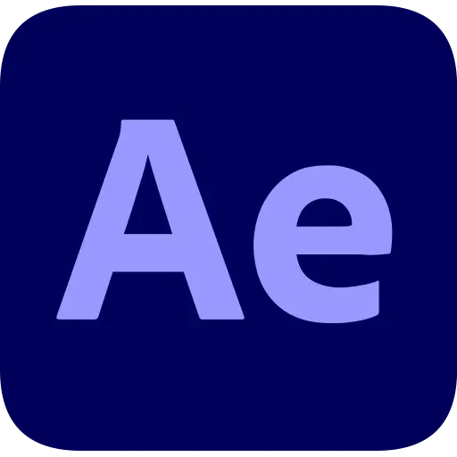
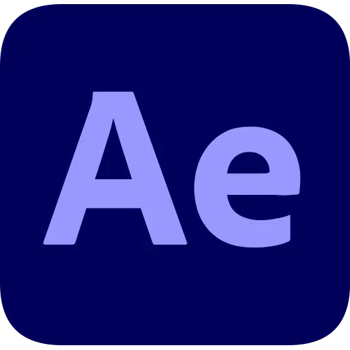


super realistic

objects of desire
this project captures the essence of modern icons, speed, scent, and style. each piece is a super-realistic digital sculpture, meticulously crafted to blur the line between the physical and the virtual.
hot sauce


conceptual bottle design for a gourmet hot sauce brand
this project involved the conceptualization and 3D modeling of a unique bottle and packaging for a new hot sauce brand. the primary goal was to create a distinctive and ergonomic form that would stand out on a competitive shelf.
cars

 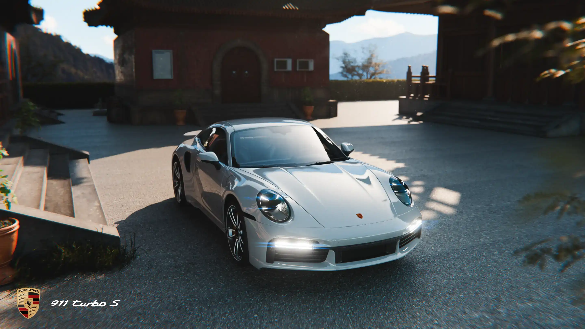
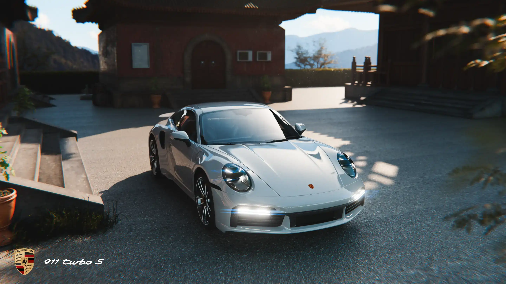
precision 3D art: high-detail Luxury Automotive
a deep dive into hyper-realistic automotive modeling, focusing on a luxury vehicles. the project involved meticulous attention to detail, from accurate body panel topology and intricate interior components to functional lighting and engine bay elements.
automotive interior modeling
this project was a deep dive into the meticulous modeling of a classic luxury car interior. the goal was to replicate every component with absolute precision, from the dashboard stitching and instrument cluster to the seat contours and console buttons.

space

Python-Powered celestial mechanics: a high-accuracy Eclipse Simulator in blender
this project is a custom-built simulation engine that accurately predicts and visualizes astronomical eclipses directly within blender. by leveraging Python scripting, the tool processes precise orbital data to calculate the exact positions of the Earth, Moon, and Sun over time. this allows for the generation of scientifically accurate eclipse events, from the path of totality to the subtle effects of light and shadow. the project showcases a powerful fusion of procedural programming and 3D visualization to transform complex astronomical data into a compelling and educational visual experience.
Apple

Mini. redefined
a 3D product showcase exploring the compact power and minimalist form of the Apple Mac mini. this series of renders captures the essence of Apple's design philosophy through photorealistic materials and lighting.
the catalyst
a photorealistic showcase of the tool that bridges the gap between digital and traditional art. This project highlights the minimalist design and tactile precision of the Apple Pencil, capturing the essence of creativity.
PiPhone

.webp)
.webp)
.webp)

meet PiPhone.
a personal project to design, model, and render a conceptual smartphone. this 3D showcase emulates the visual language of a high-end product launch, focusing on super-realistic materials, studio lighting, and a flawless finish.
showcase
The Wonders of Water: Archimedes' Principle and Beyond
This video explores the fascinating properties of water, beginning with Archimedes' principle and how it was used to determine the purity of a king's crown. The scientific visualizations were brought to life using a combination of Blender for 3D modeling, Manim powered by Python for the mathematical animations, and Adobe After Effects for 2D graphics and visual effects. Final editing and assembly were completed in Adobe Premiere Pro.
short example
this short showcases the key scientific animations from my full-length explainer video, presented without narration to highlight the visual storytelling.
robot

focus on Hard-Surface modeling
this project is a comprehensive showcase of intricate hard-surface modeling techniques. the robot was built from the ground up in blender, with a focus on creating clean topology and high-fidelity detail. every component — from the hydraulic pistons and articulated joints to the complex wiring and armor plating, was meticulously crafted to ensure mechanical believability and a high level of visual complexity.

more vehicles and AR!

 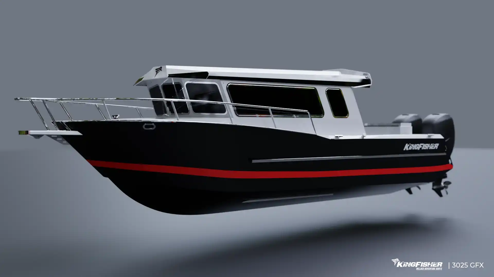
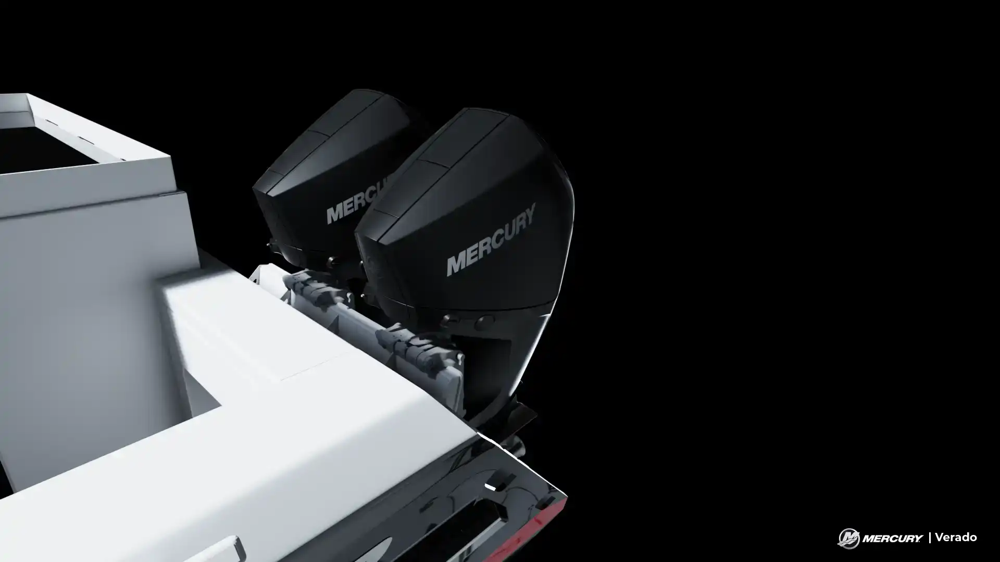
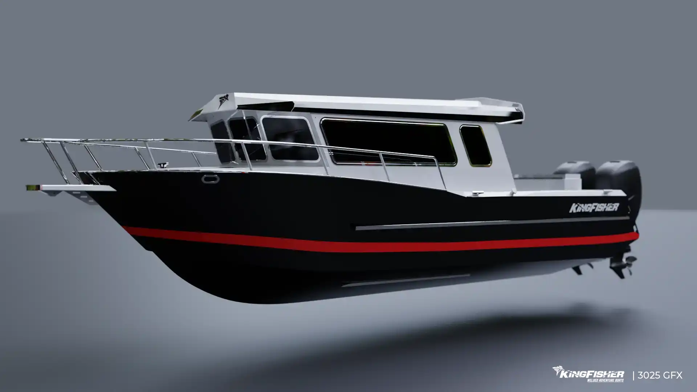
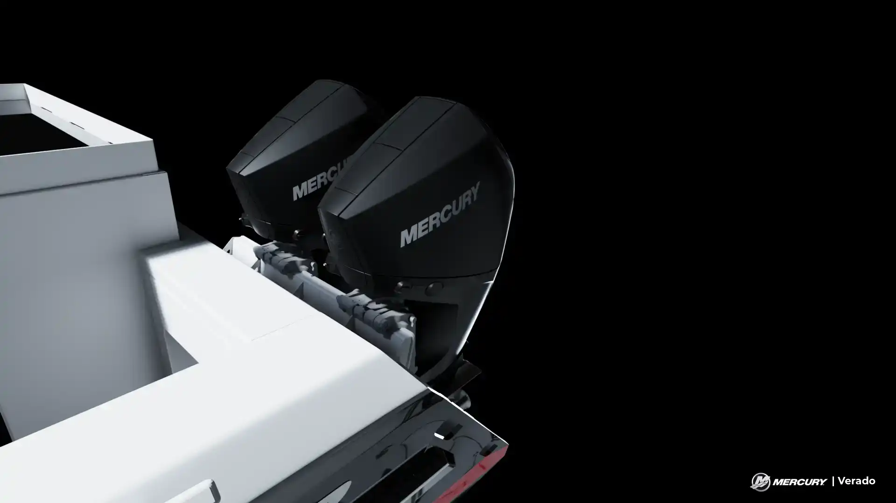

 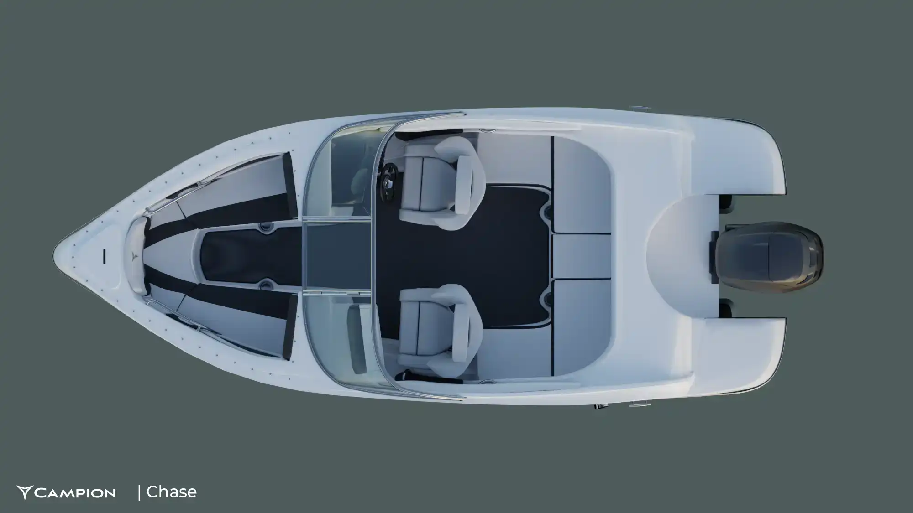
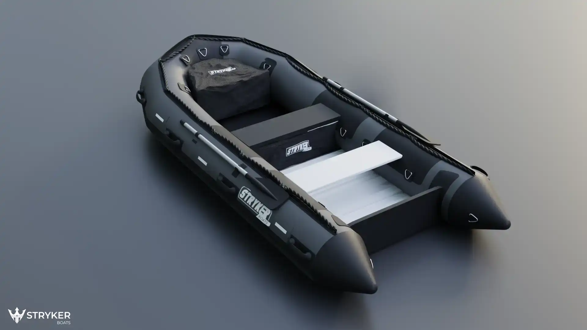
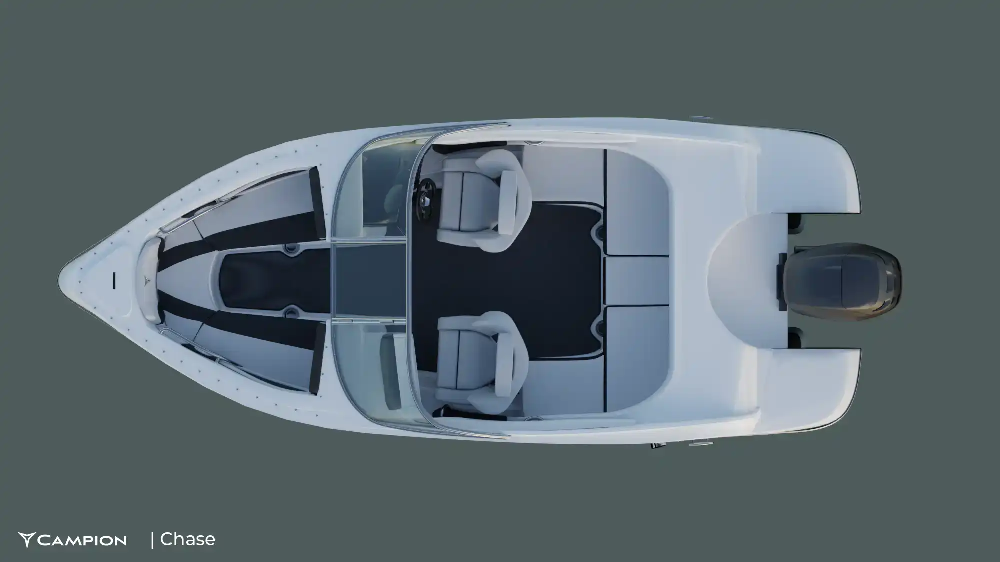
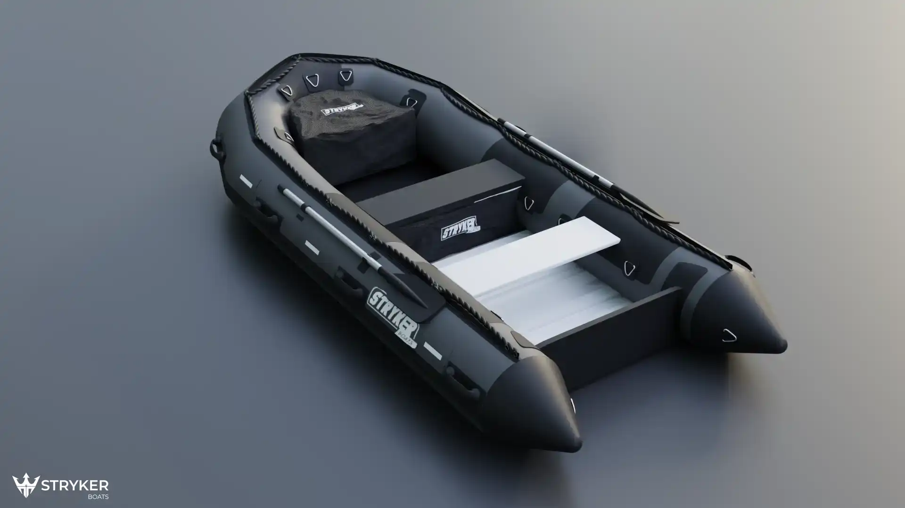
adventure on the water & land: photorealistic CGI for the Marine Industry
this project was focused on creating compelling, lifestyle-oriented marketing visuals for the recreational boating market. I was responsible for creating a complete scene featuring boats from KingFisher and Campion, rigged with Yamaha and Mercury motors, and paired with Off Grid Trailers. the goal was to produce stunning, photorealistic renders that capture the excitement of a day on the lake, using advanced lighting, water simulation, and texturing techniques in blender to create imagery ready for a catalog or advertising campaign.

AR product visualization: Off Grid Trailers' Switchback interactive preview
this project involved the design and development of an Augmented Reality (AR) application for Off Grid Trailers, allowing prospective customers to virtually preview the "Switchback" model in their own environment. the core challenge was to optimize high-fidelity 3D assets for real-time mobile AR performance while ensuring accurate scaling and realistic rendering.
the Kingfisher 3D configurator
A real-time 3D web application designed to revolutionize the boat-buying journey. this project allows customers to interact with a high-fidelity model of the Kingfisher boat, making choices on colors, materials, and optional extras. Every selection is visualized instantly, giving the buyer the ultimate confidence and a precise preview of their final product.
Xometry

precision engineering: assemblies for Xometry
a project for Xometry focused on the design and development of specialized mechanical parts and functional assemblies.


advanced surface finishing
this project for Xometry involved the meticulous creation of a comprehensive digital material library, showcasing a wide range of high-fidelity finishes. the primary goal was to achieve true-to-life, photorealistic surface qualities — from brushed metals and textured plastics to specialized coatings — for use across the company's digital assets. By developing each material with precise attention to texture, reflectivity, and color accuracy, this library now serves as a critical tool for both accurate client visualization and the creation of compelling, high-impact marketing content.
random stuff!